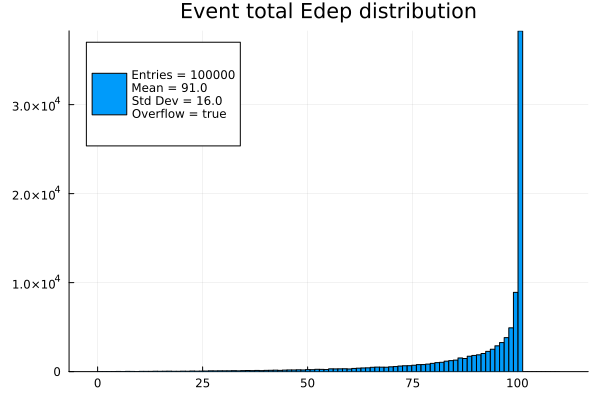

Calling G4 actions in Julia
This is a very simple example of calling user actions in Julia from a C++ Geant4 application. We define the user actions in Julia language in the file MyCode.jl and call them from the C++ application. The name and signatures of the functions are important since the C++ will associate them in the corresponding inherited classes.
The C++ code is a single file G4example.cpp that defines the Geant4 the minimal set of classes to run a simulation.
- The main program is responsible of initializing Julia by calling
julia_initand loading the Julia code executing.jl_init() jl_eval_string("include(\"MyCode.jl\")"); - Each constructor of a user action class needs to initialize a C++ function pointer to the corresponding Julia function. This is done in the constructor to avoid any dynamic dispatch at runtime. For example, for the
EventActionclass:typedef void (*eventaction_f)(const G4Event*); class EventAction : public G4UserEventAction { public: EventAction() { beginevent_jl = (eventaction_f)(jl_unbox_voidpointer(jl_eval_string("@cfunction(begin_of_event_action, Nothing, (CxxPtr{G4Event},))"))); endevent_jl = (eventaction_f)(jl_unbox_voidpointer(jl_eval_string("@cfunction(end_of_event_action, Nothing, (CxxPtr{G4Event},))"))); } ... private: eventaction_f beginevent_jl; eventaction_f endevent_jl; }; - Finally the actions are called in the corresponding Geant4 classes. For example in the
EventActionclass:void EventAction::BeginOfEventAction(const G4Event* event) { beginevent_jl(event); } ...
You can also download this example as a Jupyter notebook and a plain Julia source file.
The C++ code is available as a source file and the Julia code is available as a source file.
Table of contents
- Loading the necessary Julia modules
- Building G4Example Application
- Run the application
- Display the results
Loading the necessary Julia modules
using Geant4_jll # Needed to locate the Geant4 installation directory┌ Debug: Loading object cache file /home/runner/.julia/compiled/v1.11/JLLWrappers/7Zgw7_8jRdX.so for JLLWrappers [692b3bcd-3c85-4b1f-b108-f13ce0eb3210]
└ @ Base loading.jl:1244
┌ Debug: Loading object cache file /home/runner/.julia/compiled/v1.11/Expat_jll/4P57b_m9y0a.so for Expat_jll [2e619515-83b5-522b-bb60-26c02a35a201]
└ @ Base loading.jl:1244
┌ Debug: Loading object cache file /opt/hostedtoolcache/julia/1.11.2/x64/share/julia/compiled/v1.11/NetworkOptions/J8H6s_4x0TT.so for NetworkOptions [ca575930-c2e3-43a9-ace4-1e988b2c1908]
└ @ Base loading.jl:1244
┌ Debug: Loading object cache file /opt/hostedtoolcache/julia/1.11.2/x64/share/julia/compiled/v1.11/MbedTLS_jll/u5NEn_4x0TT.so for MbedTLS_jll [c8ffd9c3-330d-5841-b78e-0817d7145fa1]
└ @ Base loading.jl:1244
┌ Debug: Loading object cache file /opt/hostedtoolcache/julia/1.11.2/x64/share/julia/compiled/v1.11/LibSSH2_jll/K6mup_4x0TT.so for LibSSH2_jll [29816b5a-b9ab-546f-933c-edad1886dfa8]
└ @ Base loading.jl:1244
┌ Debug: Loading object cache file /opt/hostedtoolcache/julia/1.11.2/x64/share/julia/compiled/v1.11/LibGit2_jll/nfCpg_4x0TT.so for LibGit2_jll [e37daf67-58a4-590a-8e99-b0245dd2ffc5]
└ @ Base loading.jl:1244
┌ Debug: Loading object cache file /opt/hostedtoolcache/julia/1.11.2/x64/share/julia/compiled/v1.11/LibGit2/xrYJZ_4x0TT.so for LibGit2 [76f85450-5226-5b5a-8eaa-529ad045b433]
└ @ Base loading.jl:1244
┌ Debug: Loading object cache file /opt/hostedtoolcache/julia/1.11.2/x64/share/julia/compiled/v1.11/ArgTools/aGHFV_4x0TT.so for ArgTools [0dad84c5-d112-42e6-8d28-ef12dabb789f]
└ @ Base loading.jl:1244
┌ Debug: Loading object cache file /opt/hostedtoolcache/julia/1.11.2/x64/share/julia/compiled/v1.11/nghttp2_jll/KTGSA_4x0TT.so for nghttp2_jll [8e850ede-7688-5339-a07c-302acd2aaf8d]
└ @ Base loading.jl:1244
┌ Debug: Loading object cache file /opt/hostedtoolcache/julia/1.11.2/x64/share/julia/compiled/v1.11/LibCURL_jll/9JWaY_4x0TT.so for LibCURL_jll [deac9b47-8bc7-5906-a0fe-35ac56dc84c0]
└ @ Base loading.jl:1244
┌ Debug: Loading object cache file /opt/hostedtoolcache/julia/1.11.2/x64/share/julia/compiled/v1.11/MozillaCACerts_jll/XKIUi_4x0TT.so for MozillaCACerts_jll [14a3606d-f60d-562e-9121-12d972cd8159]
└ @ Base loading.jl:1244
┌ Debug: Loading object cache file /opt/hostedtoolcache/julia/1.11.2/x64/share/julia/compiled/v1.11/LibCURL/ht49g_4x0TT.so for LibCURL [b27032c2-a3e7-50c8-80cd-2d36dbcbfd21]
└ @ Base loading.jl:1244
┌ Debug: Loading object cache file /opt/hostedtoolcache/julia/1.11.2/x64/share/julia/compiled/v1.11/Downloads/eiA4B_4x0TT.so for Downloads [f43a241f-c20a-4ad4-852c-f6b1247861c6]
└ @ Base loading.jl:1244
┌ Debug: Loading object cache file /opt/hostedtoolcache/julia/1.11.2/x64/share/julia/compiled/v1.11/Tar/G9ZYP_4x0TT.so for Tar [a4e569a6-e804-4fa4-b0f3-eef7a1d5b13e]
└ @ Base loading.jl:1244
┌ Debug: Loading object cache file /opt/hostedtoolcache/julia/1.11.2/x64/share/julia/compiled/v1.11/p7zip_jll/dfuGM_4x0TT.so for p7zip_jll [3f19e933-33d8-53b3-aaab-bd5110c3b7a0]
└ @ Base loading.jl:1244
┌ Debug: Loading object cache file /opt/hostedtoolcache/julia/1.11.2/x64/share/julia/compiled/v1.11/Pkg/tUTdb_4x0TT.so for Pkg [44cfe95a-1eb2-52ea-b672-e2afdf69b78f]
└ @ Base loading.jl:1244
┌ Debug: Loading object cache file /home/runner/.julia/compiled/v1.11/Xorg_libXau_jll/S8Fsv_m9y0a.so for Xorg_libXau_jll [0c0b7dd1-d40b-584c-a123-a41640f87eec]
└ @ Base loading.jl:1244
┌ Debug: Loading object cache file /home/runner/.julia/compiled/v1.11/Xorg_libXdmcp_jll/o7tTX_m9y0a.so for Xorg_libXdmcp_jll [a3789734-cfe1-5b06-b2d0-1dd0d9d62d05]
└ @ Base loading.jl:1244
┌ Debug: Loading object cache file /home/runner/.julia/compiled/v1.11/Xorg_libpthread_stubs_jll/Ef0AA_m9y0a.so for Xorg_libpthread_stubs_jll [14d82f49-176c-5ed1-bb49-ad3f5cbd8c74]
└ @ Base loading.jl:1244
┌ Debug: Loading object cache file /home/runner/.julia/compiled/v1.11/Xorg_libxcb_jll/n4mZf_m9y0a.so for Xorg_libxcb_jll [c7cfdc94-dc32-55de-ac96-5a1b8d977c5b]
└ @ Base loading.jl:1244
┌ Debug: Loading object cache file /home/runner/.julia/compiled/v1.11/Xorg_xtrans_jll/xYA3D_m9y0a.so for Xorg_xtrans_jll [c5fb5394-a638-5e4d-96e5-b29de1b5cf10]
└ @ Base loading.jl:1244
┌ Debug: Loading object cache file /home/runner/.julia/compiled/v1.11/Xorg_libX11_jll/KzQhU_m9y0a.so for Xorg_libX11_jll [4f6342f7-b3d2-589e-9d20-edeb45f2b2bc]
└ @ Base loading.jl:1244
┌ Debug: Loading object cache file /home/runner/.julia/compiled/v1.11/Xorg_libXext_jll/H6ltV_m9y0a.so for Xorg_libXext_jll [1082639a-0dae-5f34-9b06-72781eeb8cb3]
└ @ Base loading.jl:1244
┌ Debug: Loading object cache file /home/runner/.julia/compiled/v1.11/Xorg_libICE_jll/06LST_m9y0a.so for Xorg_libICE_jll [f67eecfb-183a-506d-b269-f58e52b52d7c]
└ @ Base loading.jl:1244
┌ Debug: Loading object cache file /home/runner/.julia/compiled/v1.11/Xorg_libSM_jll/A09k2_m9y0a.so for Xorg_libSM_jll [c834827a-8449-5923-a945-d239c165b7dd]
└ @ Base loading.jl:1244
┌ Debug: Loading object cache file /home/runner/.julia/compiled/v1.11/Xorg_libXt_jll/mjVMq_m9y0a.so for Xorg_libXt_jll [28c4a263-0105-5ca0-9a8c-f4f6b89a1dd4]
└ @ Base loading.jl:1244
┌ Debug: Loading object cache file /home/runner/.julia/compiled/v1.11/Xorg_libXmu_jll/ojbMS_m9y0a.so for Xorg_libXmu_jll [6bc1fdef-f8f4-516b-84c1-6f5f86a35b20]
└ @ Base loading.jl:1244
┌ Debug: Loading object cache file /home/runner/.julia/compiled/v1.11/Libglvnd_jll/z0JB7_m9y0a.so for Libglvnd_jll [7e76a0d4-f3c7-5321-8279-8d96eeed0f29]
└ @ Base loading.jl:1244
┌ Debug: Loading object cache file /home/runner/.julia/compiled/v1.11/Xerces_jll/4EQxx_m9y0a.so for Xerces_jll [637d83c4-b86a-5d90-b82d-5cf0573a8cfc]
└ @ Base loading.jl:1244
┌ Debug: Loading object cache file /home/runner/.julia/compiled/v1.11/Geant4_jll/GKQi4_m9y0a.so for Geant4_jll [872b6946-528a-5ac7-9145-d37eec569368]
└ @ Base loading.jl:1244
┌ Debug: Loading object cache file /opt/hostedtoolcache/julia/1.11.2/x64/share/julia/compiled/v1.11/REPLExt/m7ggP_4x0TT.so for REPLExt [e5eb5ef1-03cf-53a7-ae1d-5a66b08e832b]
└ @ Base loading.jl:1244
┌ Debug: Extension REPLExt of Pkg loaded
└ @ Base loading.jl:1545
┌ Debug: Loading object cache file /home/runner/.julia/compiled/v1.11/DisplayAs/NC05O_m9y0a.so for DisplayAs [0b91fe84-8a4c-11e9-3e1d-67c38462b6d6]
└ @ Base loading.jl:1244
Building G4Example Application
The custom library is defined in the C++ file G4example.cpp. It is a single file to facilitate the building of the executable.
The attribute Geant4_jll.artifact_dir provides the path to the Geant4 installation directory. Sources are in the same location as this script.
cd(@__DIR__)
g4prefix = Geant4_jll.artifact_dir
jlprefix = dirname(Sys.BINDIR);We use the executables geant4-config and julia-config.jl to get the needed libraries and compiler/linker flags.
g4libs = read(`$g4prefix/bin/geant4-config --libs`, String) |> split
filter!(x -> x != "-lG4gdml", g4libs)
jllibs = read(`$jlprefix/share/julia/julia-config.jl --ldlibs`, String) |> split
append!(jllibs, ["-L$jlprefix/lib"])
cflags = read(`$g4prefix/bin/geant4-config --cflags`, String) |> split
ldflags = ["-Wl,-rpath,$g4prefix/lib", "-Wl,-rpath,$jlprefix/lib"];
Sys.KERNEL == :Linux && append!(ldflags, ["-Wl,--no-as-needed"]);Run the compilation and link command
Base.run(`c++ -O2 -fPIC $cflags -I$jlprefix/include/julia $ldflags $g4libs $jllibs
-o G4example.exe $(@__DIR__)/G4example.cpp`).exitcode == 0 || error("Compilation failed");Run the application
We need to set the variable JULIA_PROJECT pointing to correctly setup Julia environment.
withenv("JULIA_PROJECT" => "@.") do
Base.run(`./G4example.exe`).exitcode == 0 || error("Execution failed");
endtrueDisplay the results
println("=====> The file edepHist.png should have been saved")=====> The file edepHist.png should have been saved

This page was generated using Literate.jl.